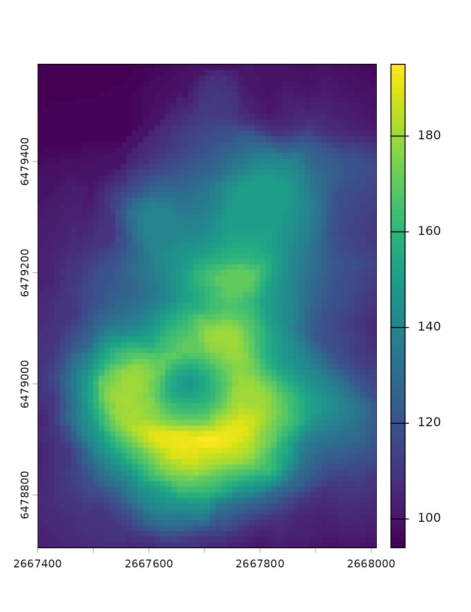

Supercells of a single raster layer
Jakub Nowosad
2026-02-10
Source:vignettes/articles/v1-one_var.Rmd
v1-one_var.RmdVersion note: This vignette documents the
supercells()interface as it existed in version 1.0 of the package. Some arguments, defaults, and behaviors may differ in newer releases. For up-to-date details, see?sc_slicand the current reference docs.
Superpixels are a collection of segmentation concepts of grouping pixels with similar characteristics. In this package, we refer to them as supercells. It is often used in computer vision to delineate parts of RGB images that are more meaningful and easier to analyze. When applied to RGB images, each superpixel contains similar colors that also could represent real-world objects. A large number of methods for creating superpixels were developed in the last decades, with the SLIC algorithm (Achanta et al. (2012), doi:10.1109/TPAMI.2012.120) being the most prominent.
The supercells package aims to utilize the concept of supercells for a variety of spatial data. This package works on spatial data with one variable (e.g., continuous raster), many variables (e.g., RGB rasters), and spatial patterns (e.g., areas in categorical rasters). Therefore, it enables not only to find areas that look similar on an RGB (satellite) image, but also to regionalize areas with comparable values of one or more variables.
This vignette shows how to use the supercells package on a single raster layer. To reproduce the following results on your own computer, install and attach the packages:
library(supercells) # supercells for spatial data
library(terra) # spatial raster data reading and handling
library(sf) # spatial vector data reading and handlingDefault arguments
The first step is to read the input data. Here, we are going to use
volcano.tif example data that is already included in the
supercells package.
vol = rast(system.file("raster/volcano.tif", package = "supercells"))
plot(vol)
It contains a digital elevation model for the Maunga Whau volcano, where each value represents an elevation above sea level.
The supercells package can be used here to delineate
areas with similar elevations. It has one main function,
supercells(), which expects at least three arguments:
-
x- an input raster (an object of class SpatRaster from the terra package) -
k- an expected number of supercells -
compactness- a compactness value. Larger values create more compact/even (square) supercells
vol_slic1 = supercells(vol, k = 50, compactness = 1)
vol_slic1The supercells() output is an sf object,
where each row represents a single superpixel. It stores supercell ids
(supercells), coordinates of the supercell centers
(x and y), and an average of all of the input
variables (elevation in this case).
It allows us to plot the supercells’ borders on top of the input raster data:
plot(vol)
plot(st_geometry(vol_slic1), add = TRUE, lwd = 0.2)The vol_slic1 object can be a final result of the
analysis or used for further grouping or clustering.
Customized arguments
The supercells() function also has a set of optional
arguments, including:
-
step- a distance (in the number of cells) between initial superpixel’ centers. It can be used instead ofk -
dist_fun- a distance function used to calculate similarities between raster values -
clean- should connectivity of the supercell be enforced? IfFALSE, then some supercells could consist of several nonadjacent regions. It isTRUEby default. -
iter- a number of iterations performed to create the output. It is10by default.
Let’s try to change the values of some of them:
vol_slic2 = supercells(vol, step = 11, compactness = 1, dist_fun = "euclidean",
clean = FALSE, iter = 10)The output still has the same structure (is an sf object
with supercell ids, coordinates of their centers, and an average of all
of the input variables), but has a slightly different number of
supercells, and their borders are a bit different.
plot(vol)
plot(st_geometry(vol_slic2), add = TRUE, lwd = 0.2)